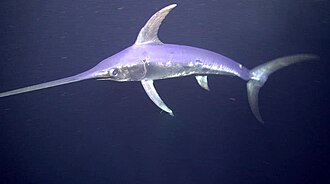

めかじきの漁獲量 都道府県ランキング
全19都道府県の順位と漁獲量
めかじきの漁獲量が全国で最も多いのは宮城県で、1,784 tです。全国（4,572 t）の39%を占めます。

| 順位 | 都道府県 | 漁獲量 | 全国に占める割合 |
|---|---|---|---|
| 1位 | 宮城県 | 1,784 t | 39% |
| 2位 | 岩手県 | 333 t | 7.3% |
| 3位 | 高知県 | 298 t | 6.5% |
| 4位 | 宮崎県 | 295 t | 6.5% |
| 5位 | 静岡県 | 287 t | 6.3% |
| 6位 | 神奈川県 | 280 t | 6.1% |
| 7位 | 北海道 | 203 t | 4.4% |
| 8位 | 東京都 | 176 t | 3.8% |
| 9位 | 沖縄県 | 172 t | 3.8% |
| 10位 | 三重県 | 133 t | 2.9% |
| 11位 | 富山県 | 123 t | 2.7% |
| 12位 | 鹿児島県 | 103 t | 2.3% |
| 13位 | 長崎県 | 78 t | 1.7% |
| 14位 | 千葉県 | 60 t | 1.3% |
| 15位 | 青森県 | 47 t | 1.0% |
| 16位 | 大分県 | 33 t | 0.7% |
| 17位 | 徳島県 | 11 t | 0.2% |
| 18位 | 和歌山県 | 10 t | 0.2% |
| 19位 | 島根県 | 1 t | 0.0% |
PR

めかじきの漁獲量の推移（令和2年〜令和6年）
全国の漁獲量は、令和2年の6,253 tから令和6年の4,572 tへ、27%減りました。期間中、1位は一貫して宮城県です。
| 年 | 全国 | 1位 | 2位 | 3位 |
|---|---|---|---|---|
| 令和6年 | 4,572 t | 宮城県1,784 t | 岩手県333 t | 高知県298 t |
| 令和5年 | 5,035 t | 宮城県1,749 t | 岩手県505 t | 静岡県396 t |
| 令和4年 | 4,477 t | 宮城県1,532 t | 岩手県490 t | 高知県325 t |
| 令和3年 | 5,380 t | 宮城県2,051 t | 静岡県485 t | 岩手県437 t |
| 令和2年 | 6,253 t | 宮城県2,839 t | 高知県631 t | 神奈川県426 t |
この数字について
- 分類：梶木の仲間
- 全国の漁獲量：4,572 t
- この数字が表すもの：漁獲量（海面漁業の漁獲量。養殖は含みません）
- 調査：海面漁業生産統計調査（海面漁業） 令和6年
- 19県分を調査（調査していない県は順位に入りません）
めかじきの漁獲量について、よくある質問
- めかじきの漁獲量が日本一の都道府県はどこですか？
- 宮城県です。海面漁業生産統計調査（海面漁業）（令和6年）で1,784 tでした。
- めかじきの漁獲量ランキング2位・3位はどこですか？
- 2位は岩手県（333 t）、3位は高知県（298 t）です。
- めかじきの漁獲量ランキング4位・5位はどこですか？
- 4位は宮崎県（295 t）、5位は静岡県（287 t）です。めかじきの全19県の順位は上の表のとおりです。
- めかじきの全国の漁獲量はどれくらいですか？
- 4,572 t（令和6年）です。